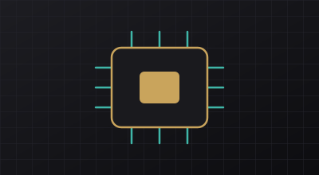

Corsi individuali o di gruppo per privati, studenti, professionisti e piccole imprese. Percorsi pratici, personalizzabili in base al livello di partenza, da remoto o in presenza ove disponibile.

Intelligenza artificiale
Corsi introduttivi e pratici per usare l’AI nella vita quotidiana e nel lavoro.
- Fondamenti dell’intelligenza artificiale
- Uso pratico degli assistenti AI
- Tecniche di scrittura dei prompt
- AI per studio, lavoro e produttività
- Limiti, verifica delle informazioni e uso responsabile
Richiedi informazioni
Word, Excel e PowerPoint
Formazione pratica sugli strumenti di produttività di Microsoft Office.
- Word: documenti, formattazione e impaginazione
- Excel: fogli di calcolo, formule di base, tabelle e organizzazione dei dati
- PowerPoint: presentazioni professionali, layout e comunicazione visiva
Richiedi informazioni
Networking
Corsi introduttivi per capire come funzionano le reti e sviluppare competenze tecniche di base.
- Concetti fondamentali di rete
- Indirizzi IP e subnetting introduttivo
- Router, switch e access point
- Protocolli di rete e modello TCP/IP
- Fondamenti di configurazione e troubleshooting
Richiedi informazioni
Cybersecurity di base
Sicurezza digitale e prevenzione dei rischi informatici.
- Password sicure e autenticazione a più fattori
- Phishing e riconoscimento delle truffe online
- Protezione di computer e dispositivi
- Navigazione sicura
- Backup e protezione dei dati
- Principi fondamentali di sicurezza delle reti
Richiedi informazioni
Durata, modalità e costi vengono definiti insieme, in base alle tue esigenze. I corsi non rilasciano certificazioni ufficiali.